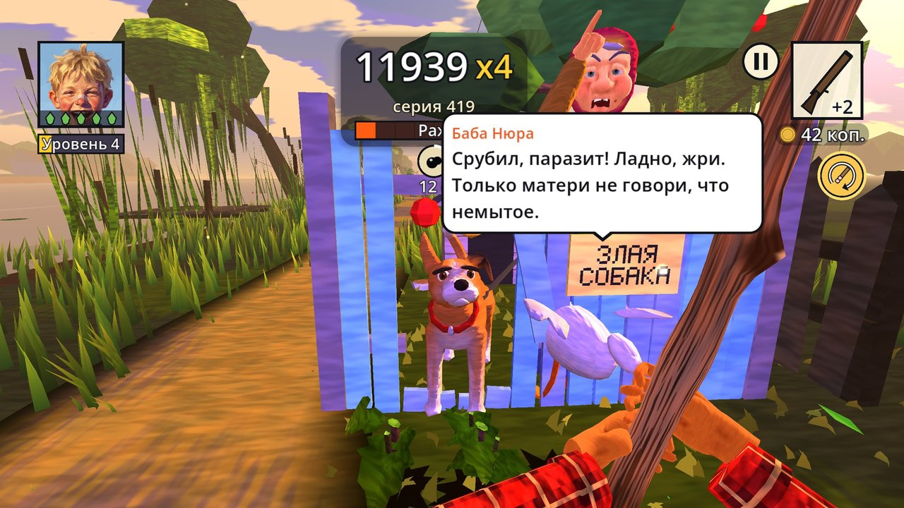
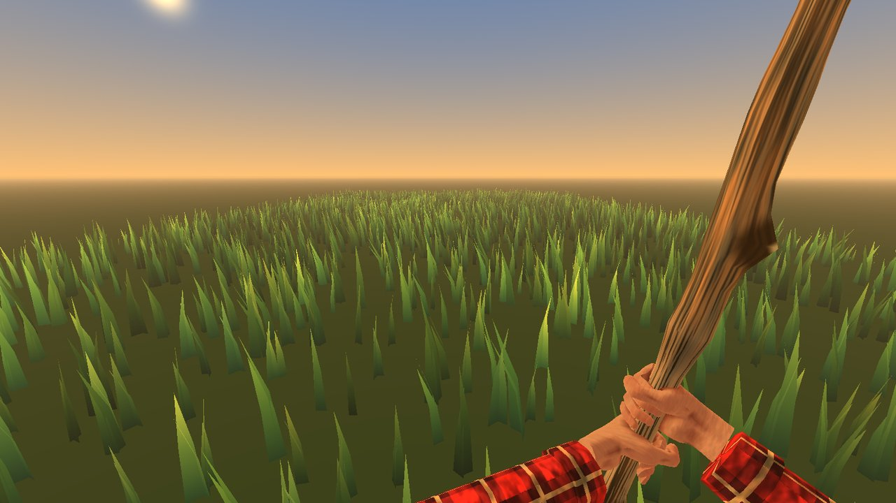
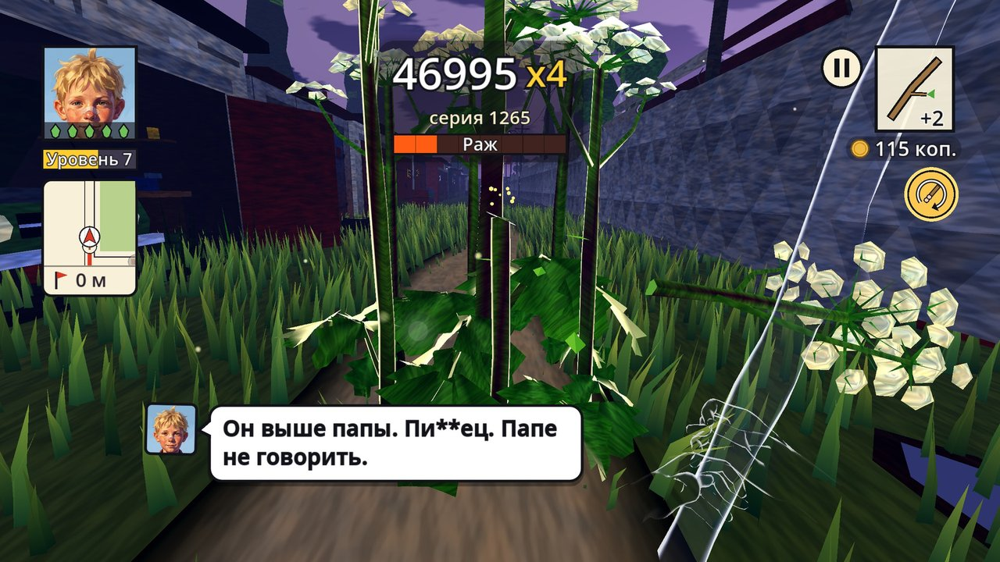

Last time we wrote about Stick vs. Weeds it was three days old and on build 56. It is now on build 81. Most of what happened in between came from one person playing it on a phone and on a PC and saying what was wrong.

The hands
The complaint that would not go away was the hands. "Hands bad." "Still crazy." And finally a sentence we will not print. We remodelled them, repainted them and re-posed them, and each time they were wrong again.
There were two causes, and neither was the model.
- The hands pointed the wrong way. They were set so that the player looked straight down his own forearm. However good a hand is, from that angle it is a stump with knuckles. Turning the hands 42 degrees, so the fingers face you, fixed more than every remodel before it.
- The fists were not closed. The stick’s handle was 5.4 centimetres thick, and an eight-year-old’s fingers cannot close round that. So the fingers sat open round it like claws, with the thumb sticking out. We tried to find a closed pose by searching finger angles at random and scoring the result. That did not work. What worked was geometry: wind each finger joint onto a circle round the handle, put the thumb over the index finger, and whittle the handle thinner, with a knob at the end, the way a kid would.


The hand itself is now an open one: the generic hand model published for web VR, under the MIT licence. We also built a small tool that draws only the hands and the stick, in every pose, so that nobody has to play a whole day to judge a thumb. His verdict on the new fists is not in yet.
Four phone faults, four small causes
- The game quit in the middle of a fight. On his phone a swipe from the left edge means "back", and the game was held upright, so a good swing at a nettle closed the game. It now plays sideways by default, and back opens the pause page.
- The settings did nothing. Each switch reacted to the finger lifting and, one frame later, to the button’s own press. Every tap flipped it twice. There is now a test that taps every switch on every page with real touch events.
- Tilting the phone did nothing either. The engine ships with the motion sensors turned off, and we had never turned them on. Tilting now turns Seryoga’s head, up to thirty degrees.
- The new jokes "sounded like a different voice". We suspected the voice generator. The likelier culprit was us: we had added effects for a mouth full of tar or soda. They are off, and every new line is now scored against the first recordings before it goes in.
A village with a map
The other complaint was fair in a different way: "It is missing quite a lot of systems." So the village is now a real map. Each day draws a route through it, a small map in the corner shows where you are, and at the corners you choose: the street with the nettles and the experience, or the quiet one with the kvass kiosk.
Seryoga now levels up in the middle of a swing. Sticks he finds go to the shed and he picks one each morning. The day’s finds and kopeks mean something by evening. The hogweed boss has to be notched on three sides before it falls. And he has more than a thousand lines, with a rule that he never interrupts himself.

It plays in the browser, and the Android APK is on the itch.io page, where it runs smoother. Still in Russian only, still 18+, still being built. If the fists are wrong again, tell us. We have a tool for that now.